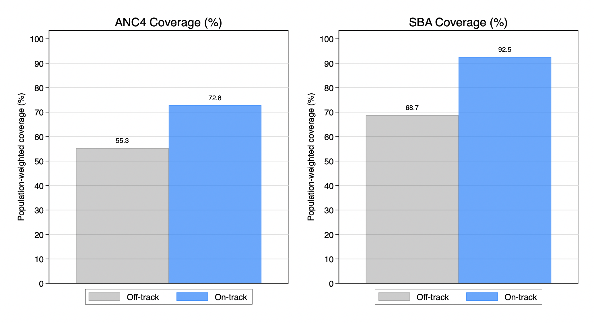

% Positions Applied
Learning and Skills Data Analyst Consultant – Req. #581598
Household Survey Data Analyst Consultant – Req. #581656
Administrative Data Analyst – Req. #581696
Microdata Harmonization Consultant – Req. #581699
% Key Findings
This analysis includes 153 countries with available data on antenatal care (ANC4) or skilled birth attendance (SBA) between 2018 and 2022. Among them, 87 countries were included in the ANC4 estimation (45 on track and 42 off track), and 149 countries in the SBA estimation (105 on track and 44 off track). Results indicate that countries on track to meet under-five mortality targets consistently report higher coverage of maternal health services: antenatal care coverage is approximately 17.5 percentage points higher among on-track countries, where coverage reaches around 72.5%, compared to 55% in off-track countries. Similarly, SBA coverage is markedly higher in on-track countries (92.5%) than in off-track ones (68.7%). However, several caveats must be noted. The availability of data differs between groups—data on ANC4 is disproportionately missing among on-track countries (missing in 62 of 107 countries with some data), which could bias group comparisons. Moreover, the population-weighted estimates are sensitive to the distribution of projected births: off-track countries in the SBA sample account for over 1 million projected births in 2022, nearly double that of on-track countries, giving them disproportionate influence in weighted averages. Finally, the findings reflect associations rather than causal relationships. Differences in health service coverage may correlate with under-five mortality outcomes, but unobserved confounding factors and group selection limit causal interpretation.
